อาหารคาร์บอนต่ำ
วัตถุดิบท้องถิ่นใกล้แหล่งผลิต ลดการขนส่งและปล่อยก๊าซคาร์บอนต่ำ — เหมาะกับตลาดยุคใหม่ที่ใส่ใจสิ่งแวดล้อม
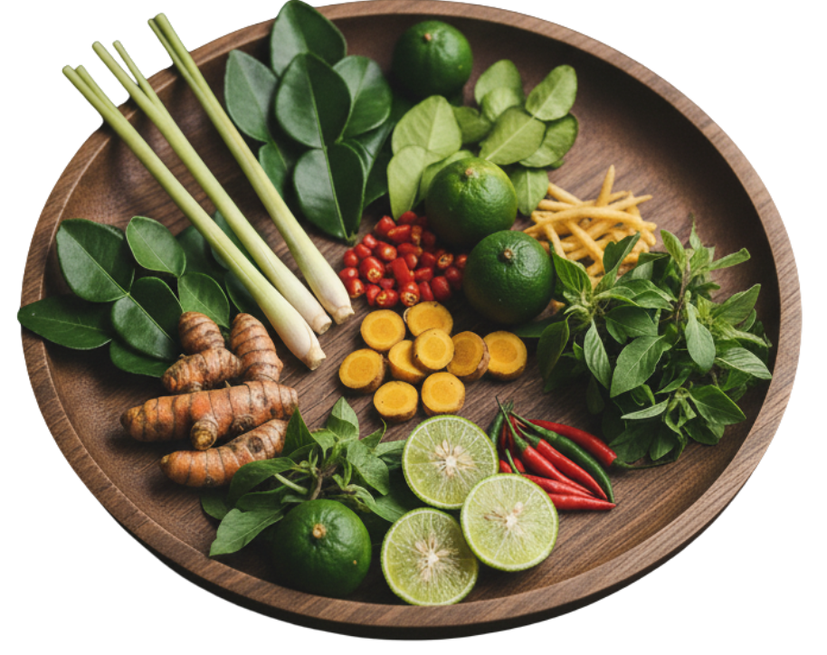
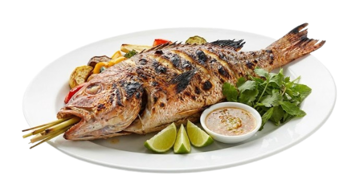
ลักษณะอาหารช่วงนี้ ใช้สมุนไพรพื้นบ้าน: ข่า ตะไคร้ ใบมะกรูด เริ่มรู้จักการถนอมอาหาร: หมักเกลือ, ตากแห้ง มีร่องรอย “ต้นแบบน้ำปลา/ปลาร้า” จากการหมักปลา เทคนิคสำคัญ: ต้ม ย่าง อบ (ยังไม่มีการผัด) เมนูต้นแบบ: ปลาอบ, ต้มสมุนไพร, อาหารหมัก
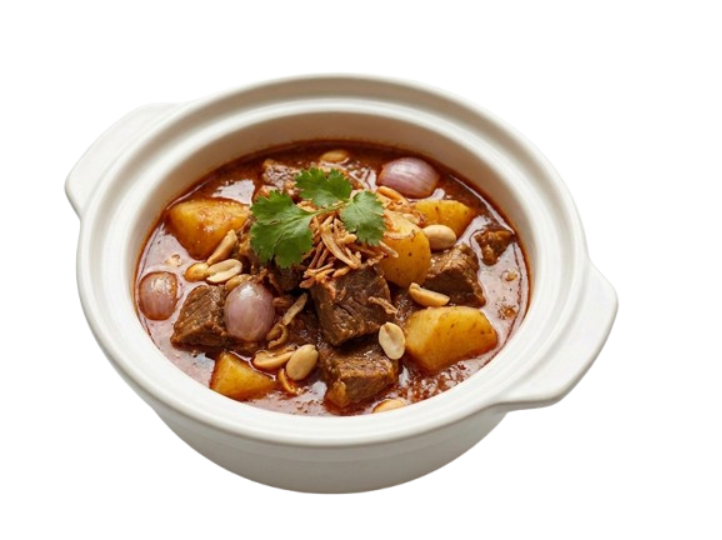
ยุคที่อาหารไทยเริ่มผสมผสานวัฒนธรรมต่างชาติจากการค้าโลก โปรตุเกสนำพริก มะเขือเทศ ฟักทอง เข้ามา จีนถ่ายทอดการผัดด้วยไฟแรงและซอสถั่วเหลือง เครื่องเทศจากอินเดีย–เปอร์เซีย เช่น อบเชย ลูกกระวาน เกิดขนมทองหยิบ–ทองหยอด และแกงเผ็ดไทยที่เริ่มเข้มข้นขึ้น
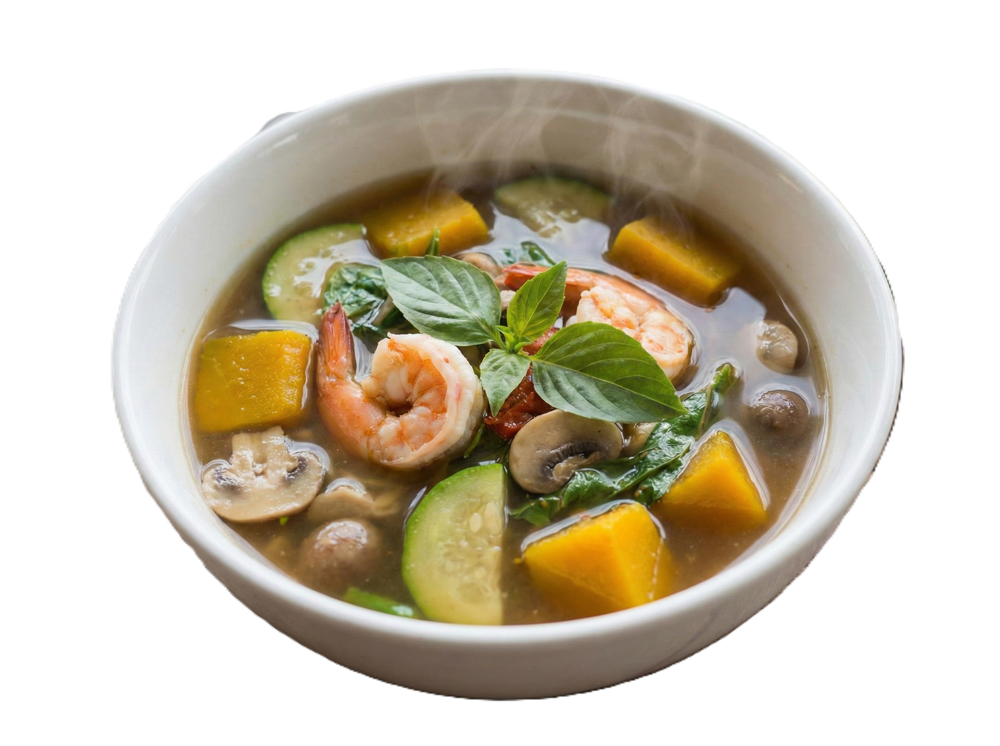
ยุคที่อาหารไทยมีพื้นฐานจากทรัพยากรท้องถิ่น เน้นสมุนไพรและการถนอมอาหาร ใช้สมุนไพรเพื่อกลิ่นและยา ไม่มีพริกแดงจากต่างชาติ วิธีทำอาหาร: ต้ม, ย่าง, ปิ้ง, หมัก, ทำปลาร้า วัตถุดิบสำคัญ: พริกไทยป่า, ข่า, ตะไคร้, ปลาแม่น้ำ
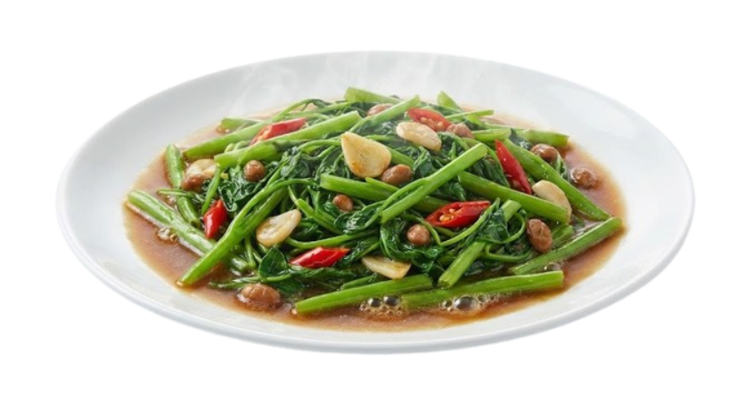
ยุคที่ตำรับไทยเริ่มถูกบันทึก และซอสถั่วเหลือง-ก๋วยเตี๋ยวจากจีนเริ่มแพร่หลาย การใช้กะทิแพร่หลาย ผัดด้วยไฟแรงแบบจีนกลายเป็นส่วนหนึ่งของอาหารไทย ตัวอย่างเมนู: ต้มยำ, แกงกะทิ, ผัดผักบุ้งไฟแดง, ก๋วยเตี๋ยวน้ำใสแบบจีน
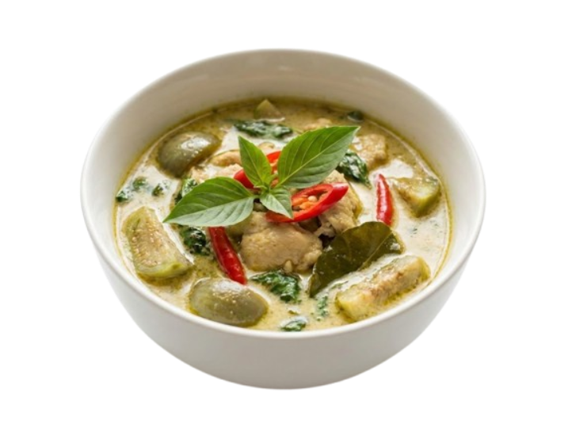
ยุคที่สยามรับอิทธิพลตะวันตกและเริ่มมี “อาหารชาววัง” ที่ประณีต เริ่มใช้นม เนย ขนมปัง ครัวหลวงทำให้วิธีทำอาหารละเอียดขึ้น ผสมเทคนิคไทย–จีน–ตะวันตก → หมี่กรอบชาววัง, แกงเขียวหวาน, ไข่ลูกเขย
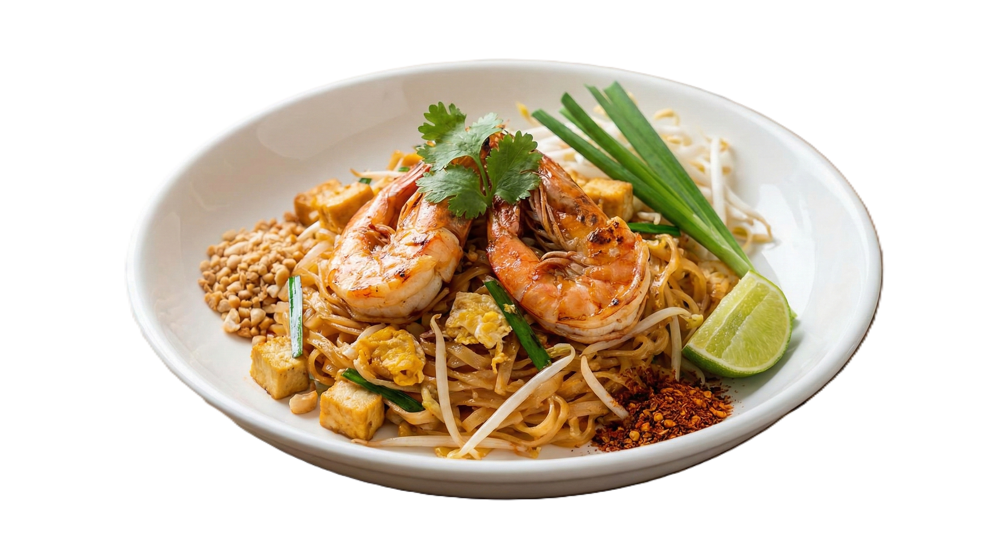
ยุคที่อาหารไทยถูกใช้สร้าง “อัตลักษณ์ชาติ” → กำเนิดผัดไทย รัฐรณรงค์ให้กินก๋วยเตี๋ยวเพื่อลดการใช้ข้าว สร้างเมนู “ก๋วยเตี๋ยวผัดแบบไทย” → กลายเป็น ผัดไทย เป็นหนึ่งในเมนูที่คนต่างชาติรู้จักมากที่สุด
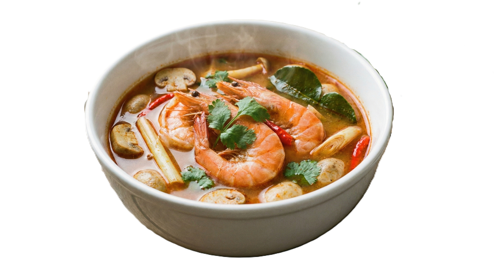
ยุค Globalization ที่ทำให้อาหารไทยโด่งดังระดับโลก “ครัวไทยสู่ครัวโลก” ดันร้านอาหารไทยทั่วโลก มัสมั่น–ต้มยำ–แกงเขียวหวาน ติดอันดับเมนูอร่อยของโลก และเกิดเมนูฟิวชัน เช่น ต้มยำพาสต้า, แกงเขียวหวานพิซซ่า


จากครัวบ้านสู่ครัวโลก
เลื่อนเพื่อเริ่มการเดินทาง
“ญี่ปุ่น...หนึ่งในประเทศที่หลงใหลอาหารไทยมากที่สุดในเอเชีย”
อาหารไทยกลายเป็นรสชาติที่คนญี่ปุ่นหลงใหล ร้านอาหารไทยมากกว่า 1,000 แห่ง กระจายอยู่ทั่วโตเกียวและเมืองใหญ่ คนญี่ปุ่นเริ่มทำ “ผัดไทย” และเมนูไทยกินเองที่บ้านมากขึ้นทุกปี
 ต้มยำกุ้ง
ต้มยำกุ้ง
 ผัดไทย
ผัดไทย
“จีน...ตลาดยักษ์ใหญ่ที่เริ่มหลงรักรสเผ็ดแบบไทยๆ”
จากเมนูแปลกใหม่ในร้านหรู ปัจจุบันอาหารไทยกลายเป็นที่นิยมในคนรุ่นใหม่ของจีน โดยเฉพาะ “ต้มยำกุ้ง” และ “ข้าวเหนียวมะม่วง” ที่ครองใจคนเมืองในปักกิ่งและเซี่ยงไฮ้
 ต้มยำหม้อไฟ
ต้มยำหม้อไฟ
 ข้าวเหนียวมะม่วง
ข้าวเหนียวมะม่วง
“ออสเตรเลีย...ประเทศที่คนทำอาหารไทยกินเองมากที่สุดในโลก”
ร้านอาหารไทยและเครื่องแกงไทยอยู่ในซูเปอร์มาร์เก็ตทั่วประเทศ หลายครอบครัวทำแกงเขียวหวานหรือส้มตำกินเองที่บ้าน ทำให้รสชาติไทยกลายเป็นส่วนหนึ่งของชีวิตประจำวันชาวออสซี่
 ต้มยำกุ้ง
ต้มยำกุ้ง
 แกงเขียวหวาน
แกงเขียวหวาน
“ฝรั่งเศสสรรค์สร้างอาหารไทย กลายเป็นงานศิลป์บนจาน”
ในฝรั่งเศส อาหารไทยถูกยกระดับจากจานพื้นบ้านสู่เวที fine dining เมนูแกงมัสมั่นและต้มข่าไก่ปรากฏในร้านดาว Michelin เชฟฝรั่งเศสมองว่าอาหารไทยคือการผสมผสานสมุนไพรและเครื่องเทศที่ประณีต
 มัสมั่นไก่
มัสมั่นไก่
 ต้มข่าไก่
ต้มข่าไก่
“อเมริกา...บ้านหลังใหญ่ของอาหารไทยในโลกตะวันตก”
จากร้านเล็ก ๆ ของผู้อพยพไทย ปัจจุบันมีร้านอาหารไทยกว่า 7,000 ร้านทั่วสหรัฐ ผัดไทยและต้มยำกลายเป็นเมนู “ประจำ” ของหลายเมือง เป็น Soft Power ที่ทำให้คนจำชื่อประเทศไทยผ่านรสชาติ
 ผัดไทย (Pad Thai)
ผัดไทย (Pad Thai)
 ผัดซีอิ๊ว
ผัดซีอิ๊ว
รสชาติที่เดินทางข้ามพรมแดน
อาหารไทยเดินทางไปไกลทั่วโลก แต่หัวใจยังคงอยู่ที่ครัวไทย
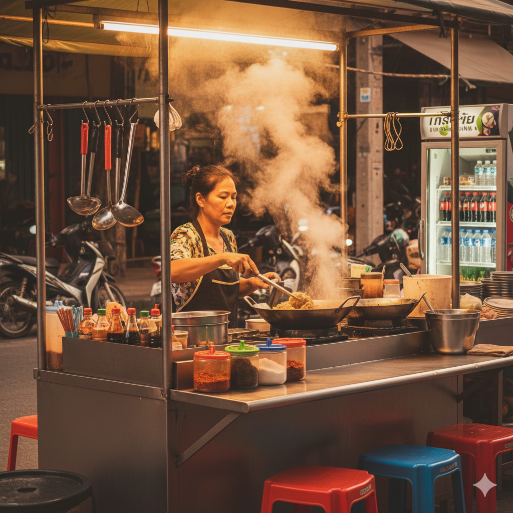
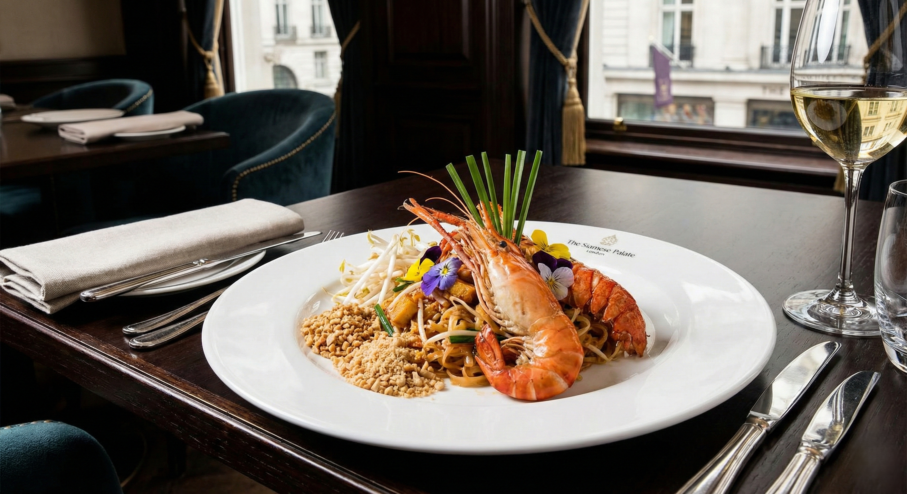
อาหารไทย เป็นระบบวัฒนธรรมที่พัฒนาอย่างต่อเนื่องมานานหลายศตวรรษ แต่ละรสชาติ—หวาน เค็ม เปรี้ยว เผ็ด—เกิดจากการผสมผสานวัตถุดิบท้องถิ่น เทคนิคดั้งเดิม และอิทธิพลจากเพื่อนบ้าน เช่น จีน อินเดีย และมลายู
กำเนิดในยุคสงครามโลกครั้งที่ 2 จากนโยบายชาตินิยมด้านอาหาร ผัดไทยสะท้อนเอกลักษณ์รสชาติไทยครบในจานเดียว

ต้มยำกุ้งรวมสมุนไพรไทย เข้ากับเทคนิคการต้มแบบต่างชาติ เป็น Soft Power ที่คนทั่วโลกรู้จักในคำแรกที่ได้ชิม
โครงการ Thai Select ให้ตรารับรองร้านที่คงรสชาติแบบไทยแท้ ปัจจุบันมีมากกว่า 1,900 ร้านใน 74 ประเทศ
ที่มา: thaiselect.com
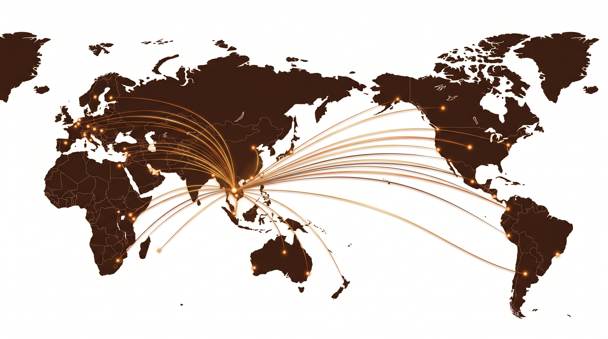
ที่มา: โครงการ Thai SELECT กระทรวงพาณิชย์
จากรสชาติในครัวบ้าน สู่เศรษฐกิจมูลค่ากว่า 1.3 ล้านล้านบาท ปี 2566 มูลค่าการส่งออกอาหารไทยทะลุ 1.36 ล้านล้านบาท
ที่มา: สมาคมผู้ส่งออกข้าวไทย (Thai Rice Exporters Association) และ กรมส่งเสริมการค้าระหว่างประเทศ (DITP)
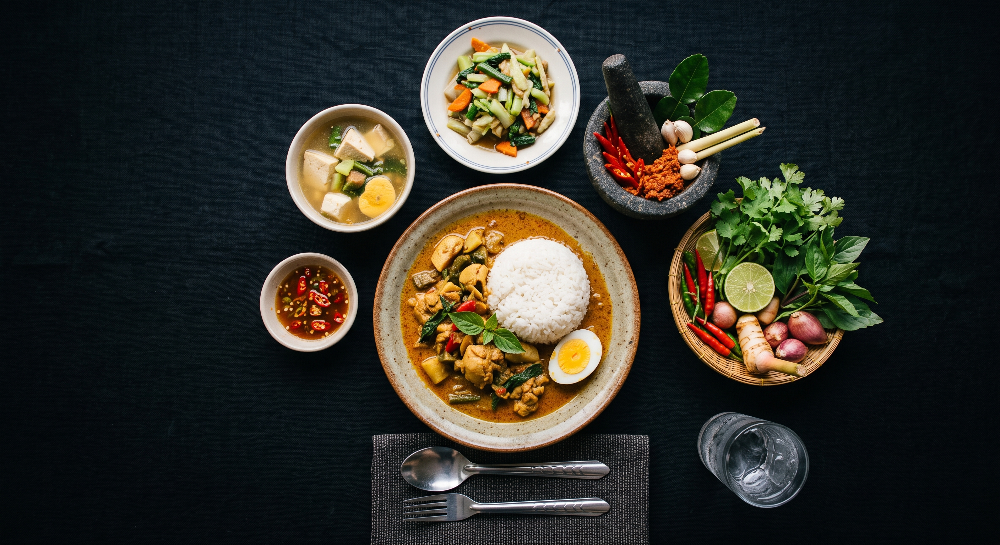
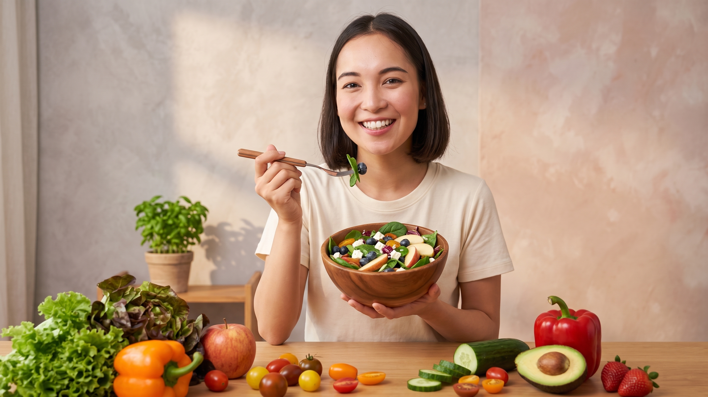
อาหารไทยกำลังถูกยกให้เป็น “โมเดลของอาหารแห่งอนาคต”
เพราะเข้ากับกระแสโลกใหม่หลายอย่าง
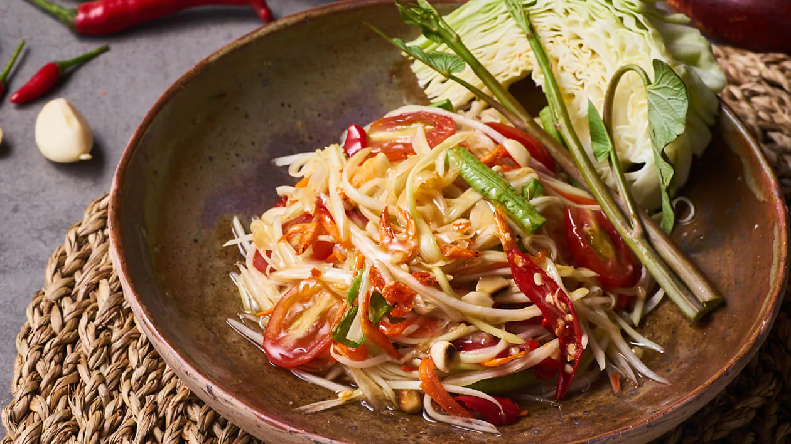
ไทยมีพื้นที่เกษตรอินทรีย์ทะลุ 300,000+ ไร่ และกำลังขยายทุกปี วัตถุดิบหลายชนิดของไทย (เช่น ข่า ตะไคร้ มะกรูด) เป็น พืชสมุนไพรที่ปลูกแบบโลว์คาร์บอน อยู่แล้ว จึงตอบโจทย์ตลาดที่ต้อง
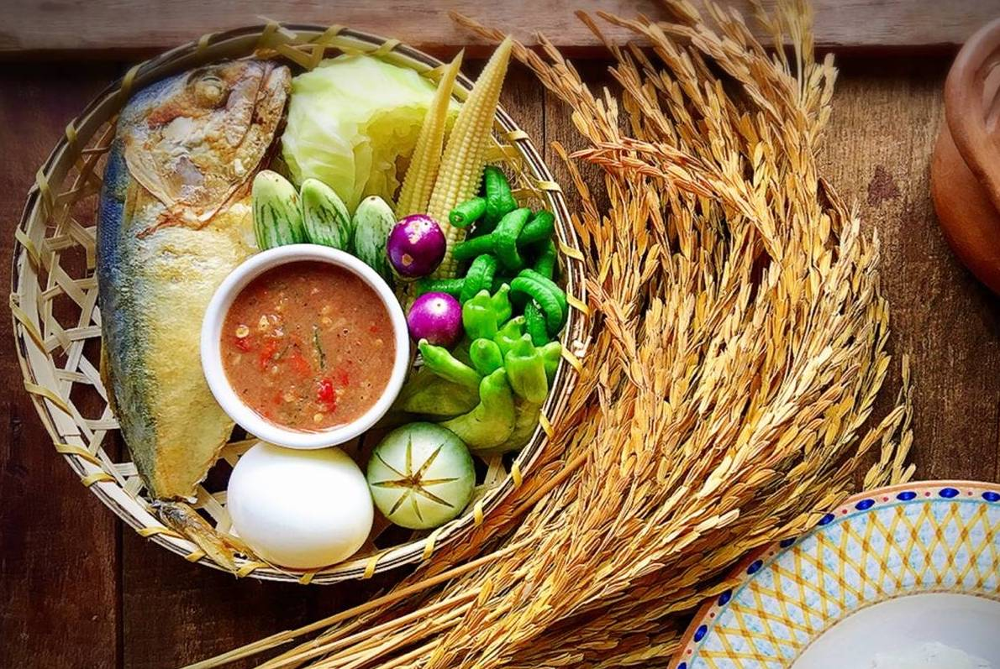
ไทยมี สมุนไพรและผักพื้นบ้านกว่า 200 ชนิด ที่วิจัยแล้วว่ามีฤทธิ์ทางสุขภาพ เช่น ขมิ้นชัน ตะไคร้ มะขามป้อม กระชายดำ รสชาติอาหารไทยเข้มข้นด้วย “สมุนไพรแท้ ๆ” ทำให้จานเดียวมีสารต้านอนุมูลอิสระสูงมาก อาหารไทยหลายเมนูเป็น “Naturally Healthy Food” อยู่แล้ว
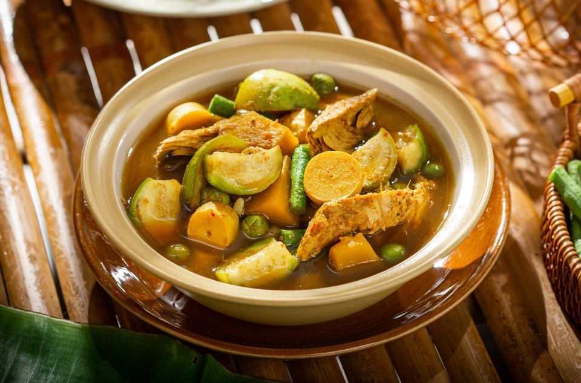
เมืองไทยมีวัตถุดิบเฉพาะถิ่นจำนวนมาก เช่น ข้าวหอมมะลิ, มะนาวสด, ปลาร้าหมักธรรมชาติ, กะปิคั้นมือ,เครื่องแกงตำสด ร้านไทยในต่างประเทศเริ่มทำ “Thai Local Experience Menu” เช่น เมนูอีสานแท้ เมนูใต้รสเข้ม เมนูเหนือกลิ่นสมุนไพร
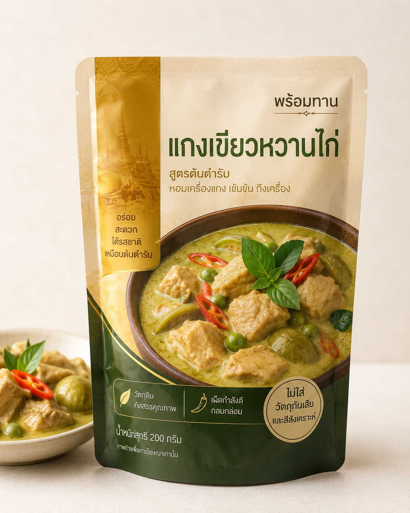
ไทยมีโรงงานแปรรูปอาหารมาตรฐานโลกจำนวนมาก (HACCP, GMP, FDA EU) อาหารไทยหลายเมนูเหมาะสำหรับ RTE โดยธรรมชาติ เช่น ต้มยำ ผัดไทย แกงต่างๆ มีเทคโนโลยีสเตอริไลซ์ อบแห้ง แช่แข็งคุณภาพสูงอยู่แล้ว
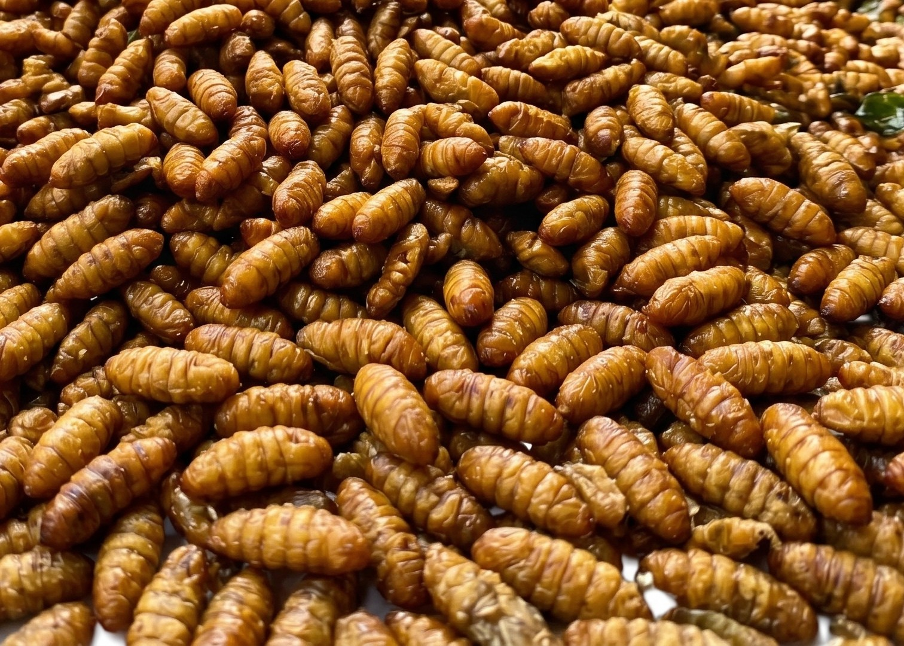
การปรับตัวของเกษตรกรผู้เลี้ยงจิ้งหรีดในภาคอีสาน เพื่อยกระดับฟาร์มสู่มาตรฐานสากล ตอบรับกระแสความต้องการโปรตีนจากแมลงซึ่งเป็นอาหารแห่งอนาคตของโลก
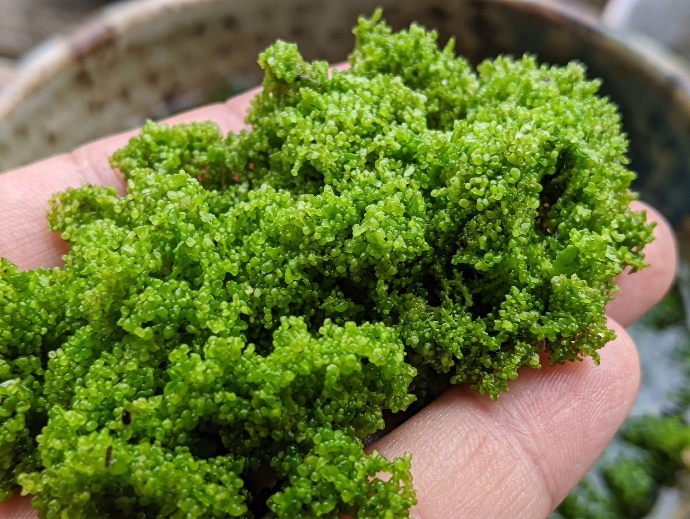
“ไข่ผำ” เป็นพืชน้ำขนาดเล็กที่มีคุณค่าทางโภชนาการสูง มีลักษณะเป็นเม็ดเล็ก ๆ สีเขียวคล้ายไข่ปลาและกำลังได้รับความนิยมมากขึ้นในฐานะซูเปอร์ฟู้ดของอนาคต เพราะมีโปรตีนสูง อุดมไปด้วยวิตามินและแร่ธาตุที่เป็นประโยชน์ต่อร่างกาย “ไข่ผำ” จึงเป็นอาหารที่ตอบโจทย์ผู้ที่รักสุขภาพและใส่ใจสิ่งแวดล้อม
โปรตีนแห่งอนาคตเป็นหัวข้อสำคัญที่ทั่วโลกให้ความสนใจ โดยเฉพาะโปรตีนจากพืช โปรตีนสังเคราะห์ และแหล่งโปรตีนทางเลือกที่ยั่งยืน เพื่อรองรับความต้องการอาหารในอนาคตที่เพิ่มขึ้นอย่างต่อเนื่อง
จากข้อมูลการส่งออกอาหารไทยในช่วง 10 ปีที่ผ่านมา จะพบว่าอุตสาหกรรมอาหารยังคงเติบโตอย่างต่อเนื่อง โดยมีปัจจัยสำคัญมาจากความนิยมอาหารไทยทั่วโลก และมาตรฐานความปลอดภัยด้านอาหารที่เป็นที่ยอมรับสากล
ทั่วโลกกำลังมองหาอาหารที่ดีต่อโลก ดีต่อสุขภาพ และยังมีตัวตนชัดเจนในรสชาติ อาหารไทย ตอบโจทย์ ครบทั้ง 3 ข้อ—ทั้งวัตถุดิบท้องถิ่น สูตรดั้งเดิม และการพัฒนา แพ็กเกจยั่งยืน นี่คือ “ความพอดี” ที่ทำให้ไทยกลายเป็นต้นแบบของอาหารยุคใหม่
วัตถุดิบท้องถิ่นใกล้แหล่งผลิต ลดการขนส่งและปล่อยก๊าซคาร์บอนต่ำ — เหมาะกับตลาดยุคใหม่ที่ใส่ใจสิ่งแวดล้อม

สูตรดั้งเดิม + วิธีทำที่มีเอกลักษณ์เฉพาะตัว
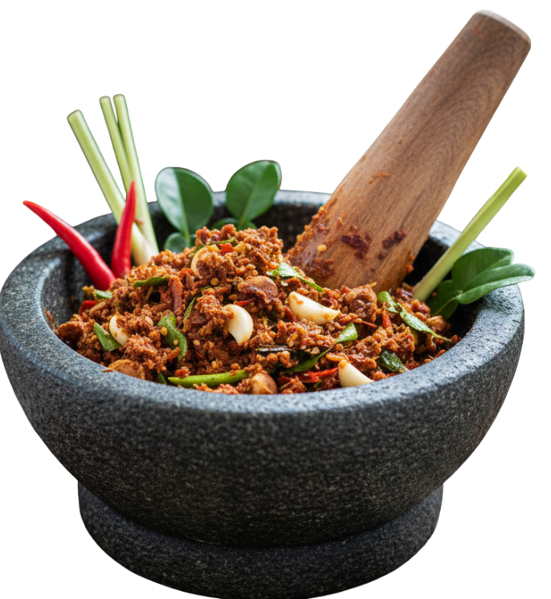
บรรจุภัณฑ์ที่ย่อยสลายได้ + งานออกแบบใหม่
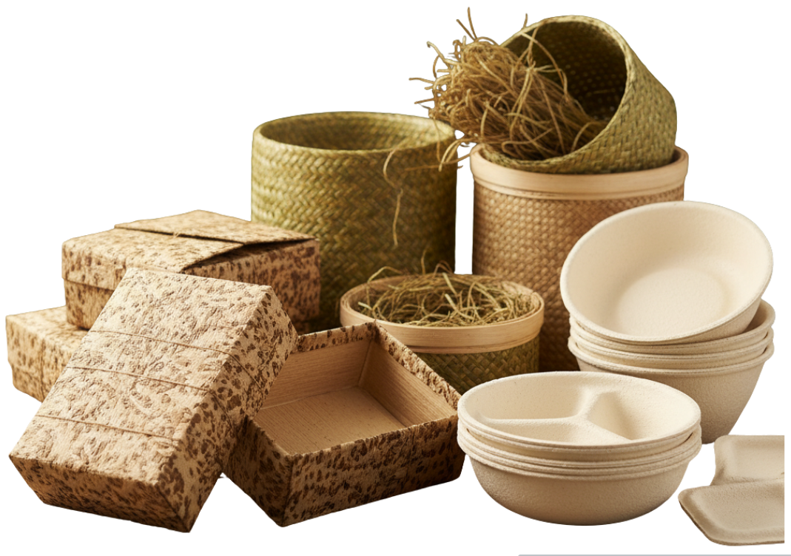
เลือกสไตล์การกินที่ตรงกับคุณที่สุด